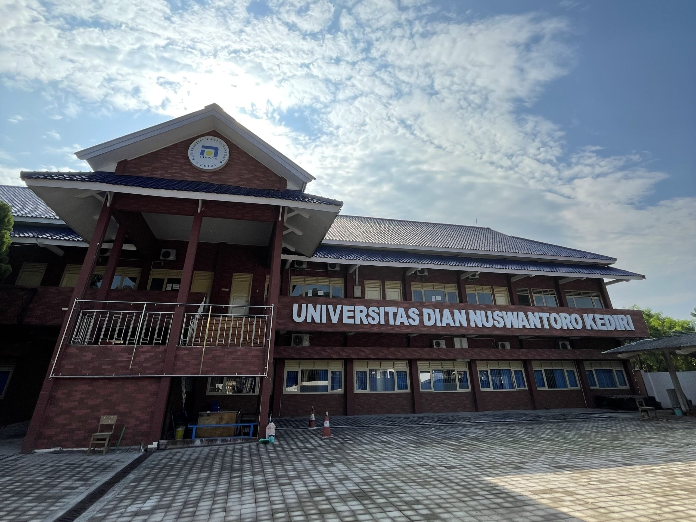

Profil Universitas
Universitas Suka Suka (USS) adalah sebuah perguruan tinggi swasta yang berdiri pada tahun 2005 dan berlokasi di Semarang, Jawa Tengah. Dengan visi menjadi universitas unggul dalam bidang ilmu terapan dan ilmu sosial, USS berkomitmen melahirkan lulusan yang berintegritas serta peduli pada masyarakat. Kampus ini menaungi beberapa fakultas, di antaranya Fakultas Teknik, Fakultas Ekonomi dan Bisnis, Fakultas Ilmu Sosial dan Humaniora, Fakultas Kesehatan, serta Fakultas Pendidikan. Program studi yang ditawarkan cukup beragam, mulai dari Teknik Sipil, Manajemen, Psikologi, Kebidanan, hingga Pendidikan Bahasa Inggris. Untuk mendukung proses belajar, USS menyediakan berbagai fasilitas seperti laboratorium komputer, perpustakaan modern, asrama mahasiswa, fasilitas olahraga, hingga aula serbaguna untuk seminar maupun wisuda. Sebagai kampus yang berlokasi di pusat kota, Universitas Suka Suka juga dikenal dengan kurikulum adaptif serta kegiatan pengabdian masyarakat yang menanamkan semangat kepemudaan, kreativitas, dan kepedulian sosial kepada seluruh civitas akademika.

Fakultas Ilmu Komputer
Fakultas Ilmu Komputer Universitas Suka Suka merupakan salah satu fakultas unggulan
yang berfokus pada pengembangan ilmu dan keterampilan di bidang teknologi informasi.
Fakultas ini menyediakan program studi seperti Teknik Informatika dan Sistem Informasi
yang disusun selaras dengan kebutuhan industri digital. Didukung oleh laboratorium
komputer yang memadai serta tenaga pengajar berpengalaman, fakultas ini berkomitmen
melahirkan lulusan yang inovatif, adaptif, dan siap bersaing di era transformasi
digital.
| No | Nama Program Studi | Jenjang | Titel |
|---|---|---|---|
| 1 | Sistem Informasi | Sarjana | S.Kom |
| 2 | Teknik Informatika | Sarjana | S.Kom |
Mata Kuliah Secara Umum
- Pendidikan Agama
- Pendidikan Pancasila
- Bahasa Indonesia
Keahlian
- Basis Data
- Kecerdasan Buatan (AI)
- Keamanan Informasi
Fakultas Kedokteran
Fakultas Kedokteran Universitas Suka Suka merupakan salah satu
fakultas yang menjadi kebanggaan universitas karena berfokus pada
pendidikan, penelitian, dan pelayanan di bidang kesehatan.
Fakultas ini menawarkan program studi Kedokteran Umum serta
Pendidikan Profesi Dokter yang dirancang sesuai standar nasional.
Dengan dukungan rumah sakit pendidikan, laboratorium anatomi, serta fasilitas
praktikum yang lengkap, fakultas ini memberikan pengalaman belajar yang
komprehensif bagi mahasiswa. Selain itu, tenaga pengajar terdiri dari
dokter spesialis dan praktisi berpengalaman sehingga mahasiswa tidak
hanya mendapatkan teori, tetapi juga pembekalan praktik yang mendalam.
Fakultas Kedokteran Universitas Suka Suka berkomitmen mencetak dokter
yang kompeten, beretika, dan memiliki kepedulian tinggi terhadap kesehatan
masyarakat.
| No | Nama Program Studi | Jenjang | Titel |
|---|---|---|---|
| 1 | Kedokteran Umum | Sarjana | S.Ked |
| 2 | Kedokteran Gigi | Sarjana | S.Kg |
| 3 | Farmasi | Sarjana | S.Farm |
Mata Kuliah Secara Umum
- Pendidikan Agama
- Pendidikan Pancasila
- Bahasa Indonesia
Keahlian
- Anatomi Manusia
- Mikrobiologi
- Biokimia
Kembali ke Atas
Pendaftaran Mahasiswa
Kembali ke Atas
Calon Mahasiswa Baru
| No | Nama | Program Studi | Foto |
|---|---|---|---|
| 1 | Fitri | Sistem Informasi | .jpg)
|
| 2 | Adam | Sistem Informasi | .jpg)
|
| 3 | Siti | Teknik Informasi | .jpg)
|
| 4 | Budi | DKV | .jpg)
|
| 5 | Susi | Ilmu Komputer | .jpg)
|
Kembali ke Atas